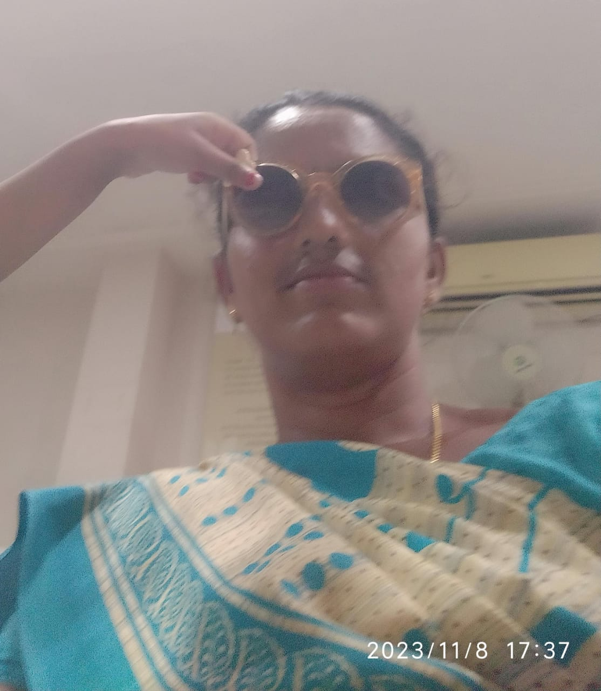
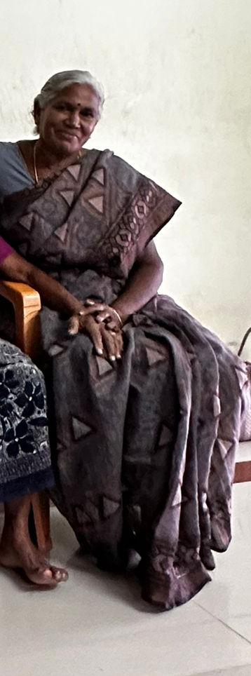
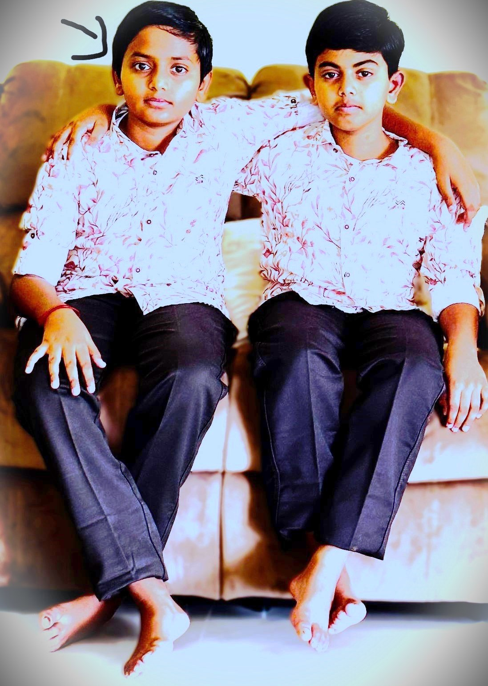
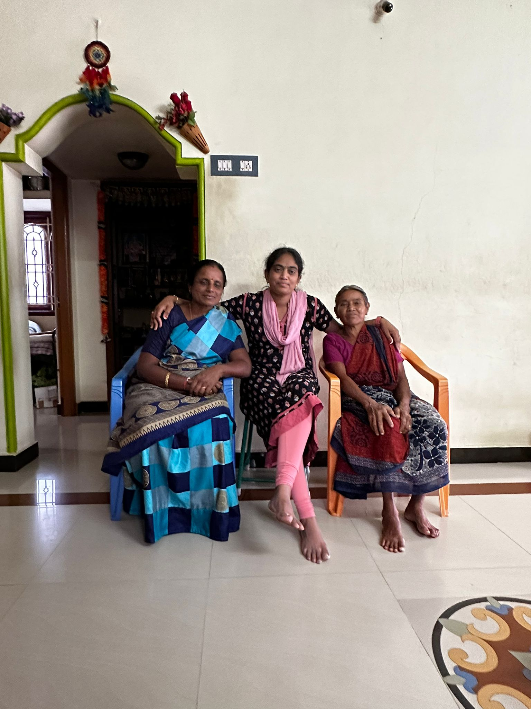
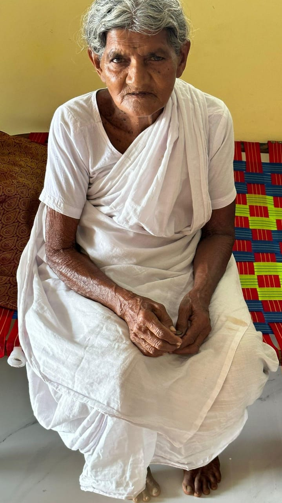
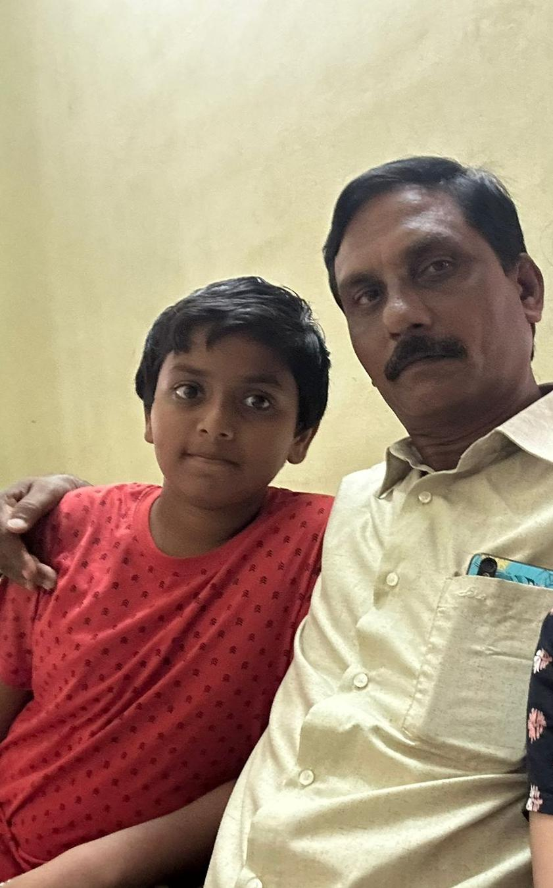
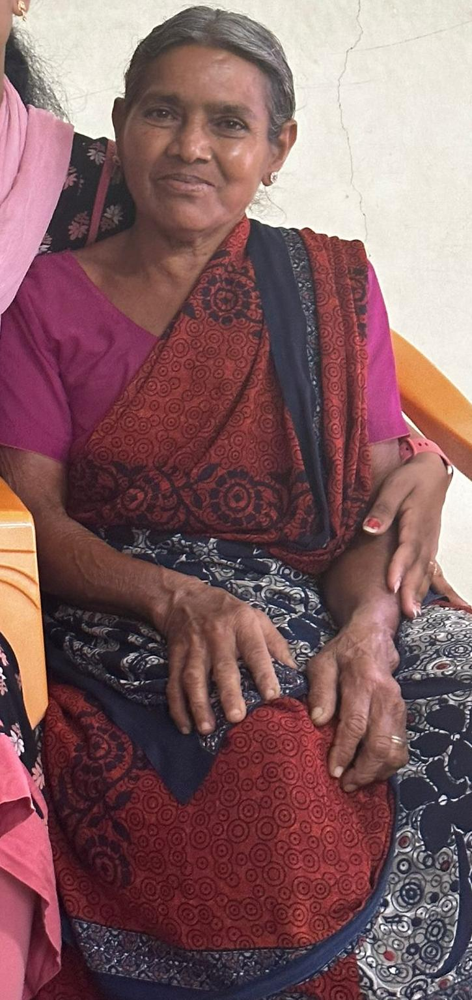

| S.No |
Photo |
Name |
Relation |
kulam & kovil |
location |
contact |
| 1. |
 |
Saravanan |
Father |
செல்லன் குலம் & கோக்களை பொன்காளியம்மன் |
vagurampatti |
no |
| 2. |
 |
selvarani |
mother |
வெலையன் குலம் & செல்லாண்டியம்மன் |
vagurampatti |
8668177290 |
| 3. |
 |
pushpaltha |
paternal Grandmother |
பண்ணை குலம் & பெரியூர் மருதகாளியம்மன் |
vagurampatti |
8903852903 |
| 4. |
|
sampath |
paternal Grandfather |
செல்லன் குலம்&கொக்களை போண் காலிஅம்மன் |
vagurampatti |
9442793641 |
| 5. |
 |
saranya |
Aunty |
பெருங்குடி குலம் & வாங்கல் அம்மன் |
U.K |
7401855524 |
| 6. |
|
madthavan |
Uncle |
செம்பன் குலம் & |
U.K |
7897331279 |
| 6. |
 |
shriya |
sister |
செம்பன் குலம் & |
U.K |
no |
| 7. |
 |
sanjhu |
brother |
செம்பன் குலம் & |
U.K |
no |
| 7. |
|
lakshmi |
maternal grandmother |
பெருங்குடி குலம் & வாங்கல் அம்மன் |
lathvadi |
I does't known any think |
| 8. |
|
apache |
maternal grandfather |
வெலையன் குலம் & செல்லாண்டியம்மன் |
lathvadi |
I does't known any think |
| 9. |
|
silambarasan |
mama |
வெலையன் குலம் & செல்லாண்டியம்மன் |
singapour |
I does't known any think |
| 10. |
|
Revathi |
sithi |
வெலையன் குலம் & செல்லாண்டியம்மன் |
lathvadi |
9629239322 |
| 11. |
|
dhranish |
brother |
வெண்டுவன் குலம் & தாளக்கரை காளியம்மாள் |
lathvadi |
9629239322 |
| 12. |
|
harthika |
sister |
வெண்டுவன் குலம் & தாளக்கரை காளியம்மாள் |
lathvadi |
9629239322 |
| 13. |
 |
santhi |
Anty |
பெருங்குடி குலம் & வாங்கல் அம்மன் |
segthamagalam |
9788463036 |
| 14. |
 |
perumaae |
paatti |
பண்ணை குலம் & மருதுயாய் |
namakkal |
9788463036 |
| 15. |
 |
murthi |
thatha |
பெருங்குடி குலம் & வாங்கல் அம்மன் |
segthamagalam |
8694328854 |
| 16. |
 |
kanamaai |
paatti |
|
segthamagalam |
9788463036 |
| 17. |
|
kanamaai |
paatti |
|
keerambur |
9443896754 |
| 18. |
|
dharni |
Anty |
பண்ணை குலம்& மருதுயாய் |
segthamagalam |
9384274508 |
| 19. |
|
Ravi |
Uncle |
|
keerambur |
9443896754 |
| 20. |
|
murugkes |
thatha |
பண்ணை குலம்& மருதுயாய் |
namakkal |
9443323690 |
| 21. |
|
karupaiaa |
thatha |
|
singapour |
|
| 22. |
|
nallamaale |
paatti |
பெருங்குடி குலம் & வாங்கல் அம்மன் |
singapour |
|